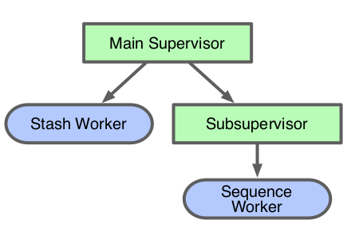
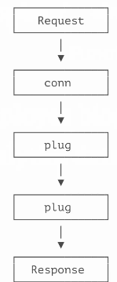
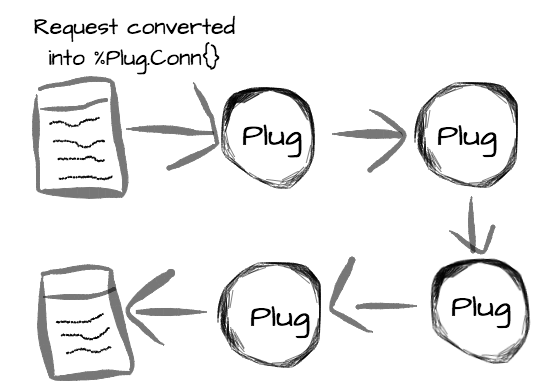
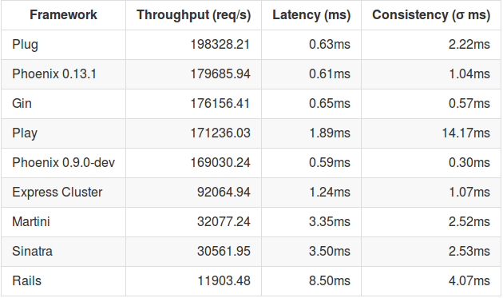

Es un framework de Erlang creado para construir sistemas distribuidos.
Inicialmente se utilizó para construir centrales telefónicas y conmutadores.
Sin embargo, estos dispositivos tienen las mismas caracteristicas que queremos para crear grandes aplicaciones online, asi que ahora OTP es una herramienta de proposito general para desarrollar y manejar grandes sistemas.
OTP define sistemas en terminos de jerarquias de aplicaciones.
一In OTP, application denotes a component implementing some specific functionality, that can be started and stopped as a unit, and which can be re-used in other systems as well.
– OTP Documentation
Una aplicacion consiste en uno o más procesos. Cada uno de los procesos sigue uno de las pocas convenciones de OTP llamadas behaviors. Hay un behavior para implementar servidores de proposito general, otro para manejar eventos, etc.
Beam, que es la maquina virtual donde Erlang y Elixir se ejecutan, puede ser vista como un sistema operativo. Donde cada programa en este sistema operativo es una aplicación. Los proyectos seran en realidad un conjunto de aplicaciones que usaran aplicaciones del mismo sistema operativo o de aplicaciones externas.
Joe Armstrong dice OTP se ha utilizado para construir sistemas con 99.9999999% de fiabilidad. Eso son nueve nueves.
Confiabilidad 99.9999999% equivalente a 1 segundo de inactividad cada 32 años. Cool.

microframework
Visitar una URL es como llamar a una función.
http:// www.example.com / about-us ?ref=google | | | | Protocol Nombre de App Nombre de Función Argumentos

GET /about-us HTTP/1.1 Host: www.example.com Connection: keep-alive Cache-Control: max-age=0 Accept: text/html,application/xhtml+xml... Upgrade-Insecure-Requests: 1 User-Agent: Mozilla/5.0 (Macintosh;... Accept-Encoding: gzip, deflate, sdch Accept-Language: en-US,en;q=0.8
%Plug.Conn{
host: "www.example.com",
method: "GET",
path_info: ["about-us"],
request_path: "/about-us",
port: 80,
remote_ip: 127.0.0.1,
req_headers: [
{"accept", "text/html,application/xhtml+xml..."},
{"upgrade-insecure-requests", 1},
{"user-agent", "Mozilla/5.0 (Macintosh;..."},
{"accept-encoding", "gzip, deflate, sdch"},
{"accept-language", "en-US,en;q=0.8"},
],
scheme: :http,
# ...
}

Plugs son funciones que toman un conn y retornan un conn
Ejecutamos el comando mix new probando_plug y añadimos las siguientes librerias a nuestro proyecto.
#mix.exs
def deps do
[{:cowboy, "~> 1.0.0"},
{:plug, "~> 1.0"}]
end
declaramos tambien las aplicaciones otp que usaremos
#mix.exs def application do [applications: [:logger, :cowboy, :plug]] end
Para descargar las librerias usamos mix deps.get para luego crear el siguiente modulo
#/lib/probando_plug.ex
defmodule ProbandoPlug do
import Plug.Conn
def init(options), do: options
def call(conn, _opts) do
conn
|> put_resp_content_type("text/plain")
|> send_resp(200, "Hola Amiguitos")
end
end
Ejecutamos de la siguiente manera:
# iex -S mix
iex> {:ok, _} = Plug.Adapters.Cowboy.http ProbandoPlug, []
{:ok, #PID<0.175.0>}
Ahora revisa la pagina http://localhost:4000/
Es necesario más de un plug:
#/lib/probando_plug.ex
defmodule ProbandoPlug do
use Plug.Router
plug :match
plug :dispatch
get "/holi" do
conn
|> put_resp_content_type("text/plain")
|> send_resp(200, "Holi Woli")
end
match _ do
send_resp(conn, 404, "Not Found")
end
end
$ iex -S mix
iex> {:ok, _} = Plug.Adapters.Cowboy.http ProbandoPlug, []
{:ok, #PID<0.175.0>}
Plug es 10% más rapido que Phoenix. Concidera usarlo si necesitas la maxima velocidad posible.
Tiempo de respuesta en µs.

Microsegundos es muy lento para ti
Requerimientos: (por ahora solo elixir es necesario)
$ mix local.hex $ mix archive.install https://github.com/phoenixframework/archives/raw/master/phoenix_new.ez # Creando nuevo proyecto $ mix phoenix.new holi --no-brunch $ cd hello_phoenix $ mix phoenix.server # Disfruta en tu navegador localhost:4000
├── _build ├── config ├── deps ├── lib ├── priv ├── test ├── web
... ├── lib | ├── holi | | ├── repo.ex | | └── endpoint.ex | └── holi.ex ├── mix.exs ├── mix.lock ├── test ...
mix.exs: Archivo configuracion de todo el proyecto (dependencias, etc)
lib/holi.ex: Archivo que inicia nuestra aplicación.
lib/holi/endpoint.ex: Archivo que inicia el servidor http.
lib/holi/endpoint.ex: Archivo que inicia conexión con base de datos.
mix.lock: Archivo Necesario para matener versiones instaladas entre entornos.
... ├── config | ├── config.ecs | ├── dex.exs | ├── prod.exs | ├── prod.secret.exs | └── test.exs ...
Archivos para especifica configuracíon para especifica configuracion de nuestros entornos.
prod.secret.exs: Archivo que no se sube al repositorio git por un tema de seguridad. Generalmente contiene contraseñas secretas de nuestro entorno de produccion.
deps: Aqui se descargan todas nuestras dependencias sin ser compiladas.
_build: Aqui las dependencias y nuestro proyecto se compila segun el entorno que le indiquemos.
priv: Carpeta donde se soporta multilenguaje, migraciones de base de datos y archivos estaticos (js, css, img)
#/lib/holi/endpoint.ex
defmodule Holi.Endpoint do
use Phoenix.Endpoint, otp_app: :holi
socket "/socket", Holi.UserSocket
plug Plug.Static,
at: "/", from: :holi, gzip: false,
only: ~w(css fonts images js favicon.ico robots.txt)
if code_reloading? do
socket "/phoenix/live_reload/socket", Phoenix.LiveReloader.Socket
plug Phoenix.LiveReloader
plug Phoenix.CodeReloader
end
plug Plug.RequestId
plug Plug.Logger
plug Plug.Parsers,
parsers: [:urlencoded, :multipart, :json],
pass: ["*/*"],
json_decoder: Poison
plug Plug.MethodOverride
plug Plug.Head
plug Plug.Session,
store: :cookie,
key: "_holi_key",
signing_salt: "83zpZzlL"
plug Holi.Router
end
#/web/router.ex=
defmodule Holi.Router do
use Holi.Web, :router
pipeline :browser do
plug :accepts, ["html"]
plug :fetch_session
plug :fetch_flash
plug :protect_from_forgery
plug :put_secure_browser_headers
end
pipeline :api do
plug :accepts, ["json"]
end
scope "/", Holi do
pipe_through :browser # Use the default browser stack
get "/", PageController, :index
end
...
end
Regla o Convención:
Si existe PageController (/web/controllers/page_controller.ex), entonces tambien existe PageView (/web/view/page_view.ex)
Si existe PageController y PageView entonces existe la carpeta web/templates/page/
"Creando una nueva url con diferente Controlador" "Creando una nueva url de la cual se obtienen parametros con diferente Controlador"
Generadores automaticos con finalidad educativa:
Formularios:
mix phoenix.gen.html User users name:string email:string bio:string number_of_pets:integer
API Rest:
mix phoenix.gen.html Amiguito amiguito nombre:string email:string number_de_amiguitos:integer
Gracias ˊ・ω・ˋ